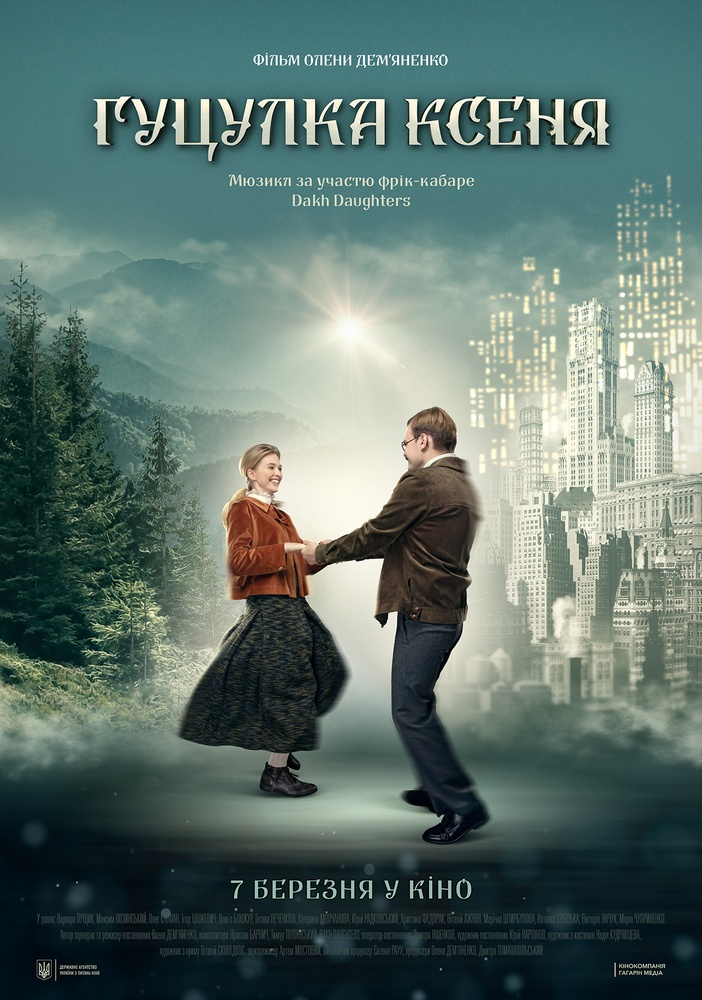

5.Зелена книга
Дія фільму, заснованого на реальних подіях, розгортається в 1962 році. Італо-американець Тоні на прізвисько "Базіка" працює викидайлом в одному з престижних нічних клубів Бронкса. Коли заклад закривається на ремонт, Тоні вирішує знайти тимчасову роботу, і незабаром у нього з'являється пропозиція. Відомий афроамериканський піаніст Дон Ширлі збирається в турне по південних штатах, і йому потрібен хороший водій і людина, здатна вирішити в дорозі будь-яку проблему, в одній особі. Обумовивши всі нюанси і прийшовши до спільної згоди, талановитий музикант і вибивала з Бронкса вирушають в дорогу, взявши з собою "Зелену Книгу" - спеціальний путівник, в якому описані всі безпечні для афроамериканців місця.
4.Гуцулка Ксеня
Старий мільйонер Микола Данилюк (американець українського походження) розуміє, що йому залишилося зовсім небагато. Він написав заповіт: один мільйон доларів піде його сину Ярославу (або просто Яро), якщо той одружиться на свідомій українці. Із цією місією хлопець вирішив дістатися до далекої країни, щоб виконати умову батька. Такі гроші не можуть пропасти! Найкраще місце для цього, звичайно ж, Карпати. Яро зупинив свій вибір на Ворохті. Ох, тут у молодого хлопця очі точно будуть розбігатися – усюди справжні українки, чистіше нікуди. Але серед них треба вибрати одну найбільш свідому. Можливо, під час цих пошуків у Яро щось перевернеться в голові й він змінить свій світогляд.
3.Люди Ікс: Темний фенікс
Американський фантастичний бойовик «Люди Ікс: Темний Фенікс» (Dark Phoenix) знайомить глядачів з історією Джин Грей. Будучи ще дитиною, дівчинка залишилася без батьківського піклування. І лише Чарльз Ксав'єр взяв дівчинку в свій притулок для обдарованих. Джин виявилася дуже обдарованою особистістю, яку вважали найсильнішим мутантом планети. При здійсненні чергового завдання з порятунку планети Джин практично загинула через вплив космічної сили. Однак їй вдалося врятуватися. Коли вся команда повернулася назад, стали помічати, як сили Джин Грей з кожним днем збільшувалися. І чим далі, тим важче їй контролювати себе. Незабаром дівчина починає застосовувати свою силу мимоволі навіть на найближчих. У команди серйозний вибір - врятувати людство або члена своєї команди? Дивитися Люди Ікс: Темний Фенікс (2019) онлайн в хорошій якості на Фільмакс. Приємного перегляду на нашому сайті.
2.Воно 2
Фільм «Воно 2» (It Chapter Two) - продовження жахливих подій, описаних Стівеном Кінгом в своєму знаменитому романі. Дія відбувається через 27 років після того, що було показано в першому фільмі. На цей раз, все починається в штаті Мен, де був побитий і скинутий з мосту Адріан Меллон. Кровожерному Пеннивайзу цього здалося мало і він добив нещасного. Майк Хенлон дізнався про це з підслуханого повідомлення на поліцейській хвилі і зрозумів, що Воно - повернулося і тепер потрібно діяти. Він повідомив про трагедію іншим постраждалим раніше - Бену, Біллу, Річі, Беверлі, Едді і Стена. Останній, не витримавши душевного потрясіння від почутого - здійснює суїцид. Компанія нещасних і, по суті - вже приречених людей, збирається разом і готується до неминучого. Чи вдасться їм хоч якось протистояти злу або ж вони заздалегідь приречені на жахливу загибель? Дивитися Воно 2 (2019) онлайн в хорошій якості на Фільмакс. Приємного перегляду на нашому сайті.
1. За п'ять кроків до кохання
Спадкова хвороба, яка супроводжується ускладненням дихання та потребує пересадки легенів – ось вирок, про який вони знають з дитинства. Стелла (Хейлі Лу Річардсон) та Вілл (Коул Спроус) проходять лікування у одній клініці. Проте через особливості протікання хвороби, пацієнти не можуть наближатися один до одного. Будь-яка найменша інфекція, не помітна для здорової людини, для них може стати смертельною. Увесь сенс життя як Стелли, так і Вілла полягає в чіткому дотриманні правил та щоденному виживанні. Так було доти, доки вони не зустріли один одного. Тепер кожен зрозуміє навіщо йому боротися та жити далі.